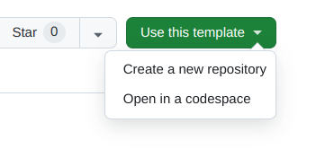

Welcome to the workshop¶
Go to https://opensafely.github.io/dummy-data-workshop to follow along.
Prerequisites¶
GitHub and Codespaces¶
We will use a GitHub repository and Codespaces for this workshop. You will need a personal GitHub account. Follow the instructions to setup your codespace.
ehrql¶
The ehrQL code that we'll look at in this workshop is not very complicated, however, it is assumed that you are not completely new to ehrQL. If you need a reminder, please see the ehrQL checklist and the ehrql documentation.
R¶
Some previous experience writing code in R is recommended.
Setup your codespace¶
Please go to https://github.com/opensafely/dummy-data-workshop
Click on the "Use this template" button, and select "Open in a workspace"

The codespace will take several minutes to launch. Please wait!
Warning
The codespace will launch with the updated version of ehrQL and R that you need
for this workshop. You should ignore any terminal reminders to run opensafely pull,
as this will replace the custom R images that we are using. If you need to, you can
update the R images again by running update_r in your codespace terminal.
Notes¶
We'll use some icons in parts of this tutorial:
For when we're looking at or modifying some code in a file.
For when we need to run a command in the terminal
Suggested exercises
Blocks like this indication suggested exercises to try, or ways to experiment; we won't necessarily have time to go through these during the workshop, but you might want to come back to them in the time at the end of the session, or afterwards.